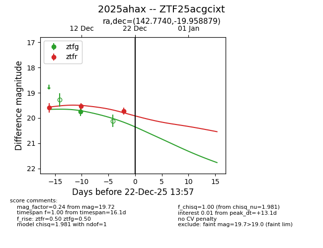
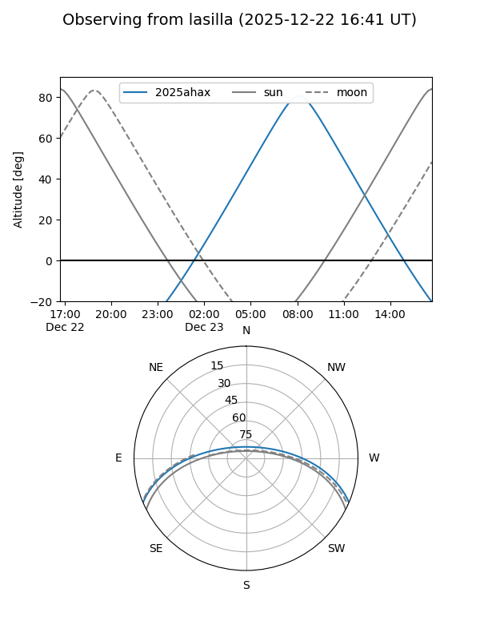
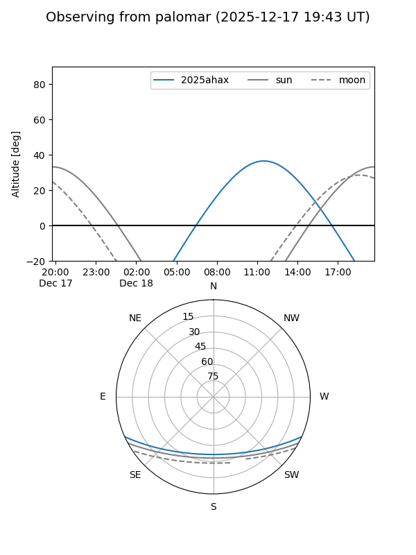

2025ahax
Target 2025ahax at 2025-12-18 11:18
Aliases and brokers:
FINK: fink-portal.org/ZTF25acgcixt
Lasair: lasair-ztf.lsst.ac.uk/objects/ZTF25acgcixt
ALeRCE: alerce.online/object/ZTF25acgcixt
TNS: wis-tns.org/object/2025ahax
YSE: ziggy.ucolick.org/yse/transient_detail/2025ahax
alt names
ZTF25acgcixt (ztf,fink_ztf)
2025ahax (tns,yse)
Coordinates:
equatorial (ra, dec) = 142.7740,-19.95888
equatorial (HMS+DMS) = 09:31:05.76,-19:57:31.97
galactic (l, b) = (251.6910,+22.40237)
Photometry
last ztfg=19.75, ztfr=19.54
1 ztfg, 2 ztfr detections
Lightcurve

Visibility


Additional plots